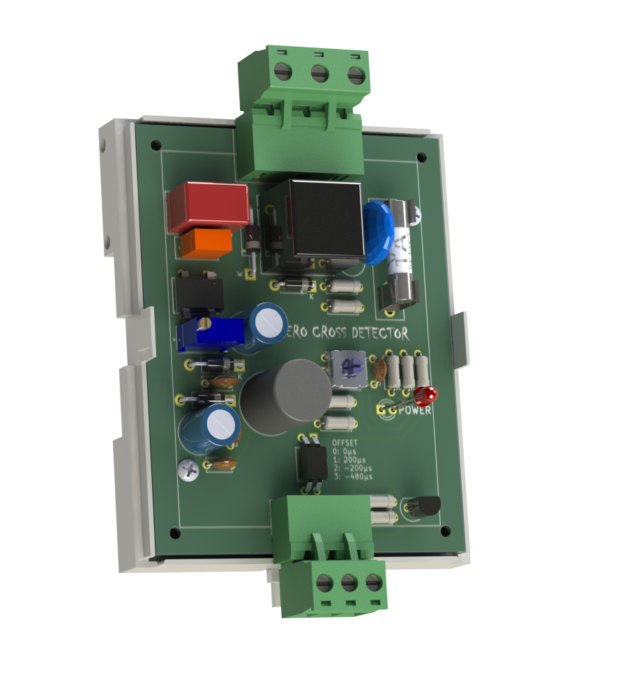
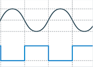

SynchroPoint
Precision Zero Cross Detection
Current Prototype
The SynchroPoint Zero Cross Detector is a standalone DIN rail mountable module, with integral safety isolation transformer, double fusing, optocoupler isolation, and adjustable signal offset.
It outputs a square digital pulse synchronized with the zero cross point of the AC Supply.
The output signal range is 3-18VDC, and the offset can be adjusted between -480uS and + 200uS.
